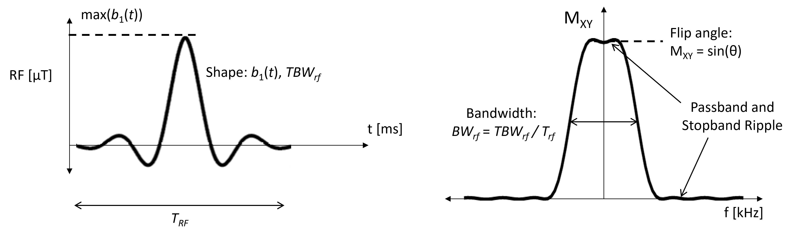
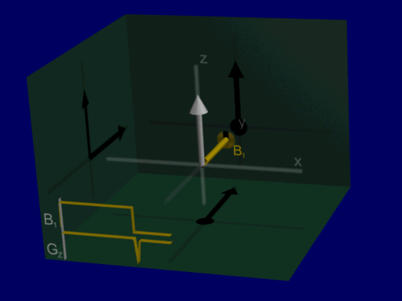
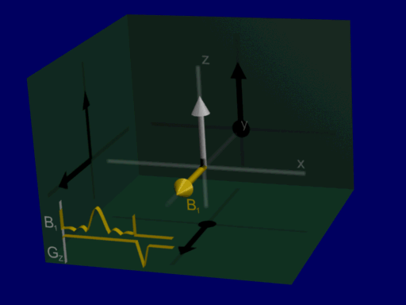
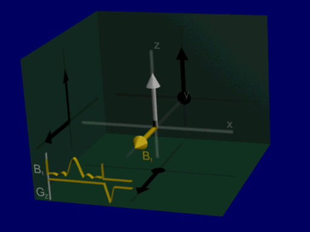
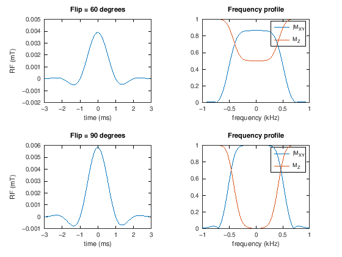

% setup MRI-education-resources path and requirements
cd ../
startup
loading image
loading signal
RF Pulses#
The purpose of appling RF magnetic fields is to excite the spins. Equivalently, this RF energy aims to flip the net magnetization. This RF energy is referred to as an RF pulse, since the RF energy is applied for a short period of time and then switched off.
Learning Goals#
Describe how various types of MRI contrast are created
Understand how changes in flip angle are implemented
Manipulate MRI sequence parameters to improve performance
Understand how changes in flip angle are implemented
RF Pulse Properties#
Here is a summary of RF pulse properties and parameters that are important for MRI. These will be explained in detail later.

Flip Angle#
The flip angle (on-resonance) is equal to the integral of the RF pulse shape, \(b_1(t)\) (in units of magnetic field)):
Time-bandwidth Product#
The time-bandwidth product (TBW) characterizes the relationship between pulse duration, \(T_{rf}\), and bandwidth, \(BW_{rf}\) and is a fixed value for a given pulse shape. It is defined as
Specific Absorption Rate#
The Specific Absorption Rate (SAR) measures the amount of energy absorbed by the body from a RF pulse. Since this absorption can cause tissue heating there are safety limits on SAR. It is proportional to the integrated total RF pulse power:
\(T_{rf}\) is the duration of the RF pulse. For for MRI, SAR can cause tissue heating and thus there are SAR safety limits to minimize this heating.
Hard pulse versus Shaped Pulse#
The first RF pulse typically introduced in MRI education is the so-called “hard” pulse - a constant amplitude pulse applied for some period of time. As will be shown below, this pulse performs poorly for slice-selection, so shaped sinc-like pulses are used. Shaped pulses create frequency profiles that excite a range of frequencies approximately uniformly (with the same flip angle), while not exciting spins outside this frequency range.
On-resonance Excitation#
We can visualize the rotation of the net magnetization as before as a rotation about the RF pulse vector, for Hard and Shaped pulses:
hard pulse:

shaped pulse:

Looking at the on-resonance or center frequency response of a sinc-like shaped pulse, the flip angle is achieved slightly differently by tipping the net magnetization back and forth.
Off-resonance Excitation#
The flip angle provided by a hard pulse varies substantially as a function of off-resonance frequency (e.g. in the presence of a magnetic field gradient) so is not a good pulse for slice-selection. Meanwhile, the sinc-like pulse becomes advantageous when considering a range of resonance frequencies, where this pattern of back and forth tipping leads to net magnetizations either being flipped or not:
This is illustrated by the following animation, showing net magnetizations across a range of positions when the pulse is applied with a gradient:
hard pulse:
shaped pulse:

These simulations are for an identical range of positions, allowing for visualization the majority of net magnetizations in this case are either at an approximate 90-degree or 0-degree excitation, with very few intermediate flip angles. that the range of resulting magnetizations from the hard pulse is wide, representing a spread of different flip angles at different positions, whereas with the sinc-like pulse the majority of net magnetizations in this case are either at an approximate 90-degree or 0-degree excitation, with very few intermediate flip angles. (Also note the refocusing gradient at the end, which is necessary for corrected for additional phase during the gradient & RF.)
This behavior can be analyzed by simulation of the RF pulse profile as well, now using the Bloch equation for a more precise simulation as compared to using Fourier Transform approximation:
RF Pulse Profile#
To precisely characterize the behavior of an RF pulse, a pulse profile can be computed.
In this section, we will characterize the behavior of RF pulses as a function of off-resonance, or frequency. In the next section, gradients will be added to perform slice selection and the profile will be computed as a function of space.
The RF pulse profile can plot several parameters, including the flip angle, the resulting transverse magnetization \(M_{XY}\), and the resulting longitudinal magnetization \(M_Z\).
The following simulations compute the magnetization profiles after hard and shaped RF pulses.
gammabar = 42.58; % kHz/mT
M0 = 1;
M_equilibrium = [0,0,M0].';
dt = 0.1; % ms
flip = 90;
% Hard Pulse
tmax = 1.5;
N = tmax/dt;
t = [-N/2:N/2-1]*dt;
RF = ones(1,N);
RF = (flip*pi/180)* RF/sum(RF) /(2*pi*gammabar*dt);
% B10 = (flip/360) / (gammabar*length(RF)*dt)
BW = 2; % kHz
df = linspace(-BW,BW);
M = repmat(M_equilibrium, [1, length(df)]);
for n = 1:length(t)
for f = 1:length(df)
M(:,f) = bloch_rotate( M(:,f), dt, [real(RF(n)),imag(RF(n)),df(f)/gammabar]);
end
end
subplot(211)
plot([t(1)-eps,t,t(end)+eps],[0,RF,0])
xlabel('time (ms)'), ylabel('RF (mT)')
subplot(212)
plot(df,sqrt(M(1,:).^2 + M(2,:).^2), df, M(3,:))
title('Frequency profile')
xlabel('frequency (kHz)'), legend('|M_{XY}|', 'M_Z')%, ylabel('flip')
% Windowed Sinc Pulse
tmax = 8;
N = tmax/dt;
t = [-N/2:N/2-1]*dt;
RF = hamming(N)' .* sinc(t);
RF = (flip*pi/180)* RF/sum(RF) /(2*pi*gammabar*dt);
M = repmat(M_equilibrium, [1, length(df)]);
for n = 1:length(t)
for f = 1:length(df)
M(:,f) = bloch_rotate( M(:,f), dt, [real(RF(n)),imag(RF(n)),df(f)/gammabar]);
end
end
subplot(211)
plot(t,RF)
xlabel('time (ms)'), ylabel('RF (mT)')
subplot(212)
plot(df,sqrt(M(1,:).^2 + M(2,:).^2), df, M(3,:))
title('Frequency profile')
xlabel('frequency (kHz)'), legend('|M_{XY}|', 'M_Z')%, ylabel('flip')
Frequency Content in RF Pulses#
For RF pulses, we generally want to control the frequencies that are excited. Most commonly, we want to excite a range of frequencies that then will correspond to a range of positions to excite a slice.
Sum of Frequencies#
One way to think of the RF pulse design then, is that we can add a range of frequencies together in the RF pulse, which will then excite a range of off-resonance frequencies. This “sum of frequencies” illustration of RF pulses is shown in the following animations.
In the lab frame, this happens around the Larmor frequency:

In the rotating frame, the frequencies build up around frequency = 0

Fourier Transform Approximation#
Based on the above illustration, we can see that the profile of an RF pulse is similar to a Fourier Transform - an operation that determines the frequency content of a signal.
In practice, the RF pulse profile is only approximately proportional to the Fourier Transform of the RF pulse shape, but this approximation is useful for understanding the frequency content of RF pulses.
where \(b_1(t)\) is the RF pulse shape, and \(\theta(f)\) is the flip angle at frequency \(f\).
For this reason, our typical RF pulse shapes are sinc-like, which have a Fourier Transform that are rect-like. In practice, this approximation is only valid for small flip angles, typically up to 60 degrees. There are tools such as the SLR transform that can be used to design RF pulses with larger flip angles, which are described later.
